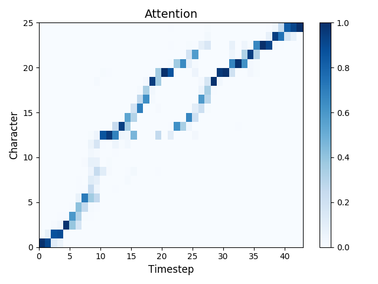
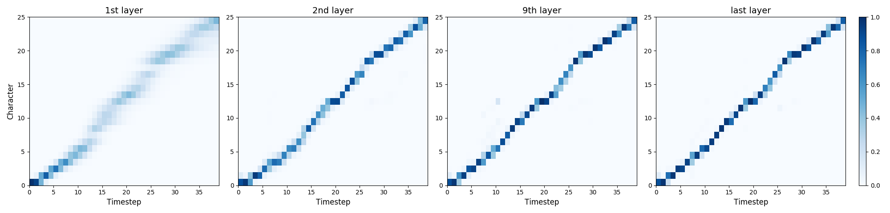
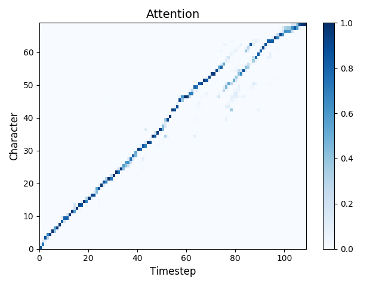
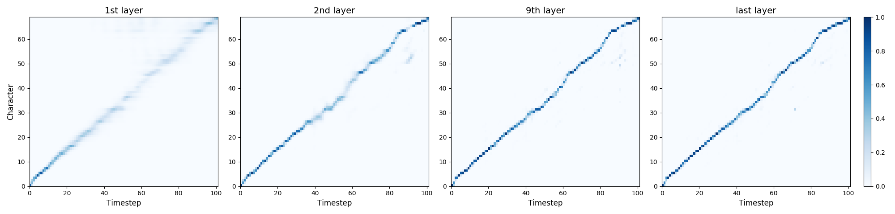

Experiment I: Neural vocoder conditioned on mel-spectrogram
We obtain synthesized speech from autoregressive WaveNet, parallel ClariNet, and parallel WaveVAE.
Ground Truth
WaveNet
ClariNet
WaveVAE
Experiment II: Text-to-Speech
For text-to-spectrogram model, we have two options: autoregressive Deep Voice 3 and non-autoregressive seq2seq model.
For neural vocoder, we have three options: autoregressive WaveNet, parallel ClariNet, and parallel WaveVAE.
We obtain synthesized speech from the following six neural TTS systems by pairing a text-to-spectrogram model with a neural vocoder:
Deep Voice 3 + WaveNet
Non-autoregressive + WaveNet
Deep Voice 3 + ClariNet
Non-autoregressive + ClariNet
Deep Voice 3 + WaveVAE
Non-autoregressive + WaveVAE
1: Ask her to bring these things with her from the store.
2: We also need a small plastic snake and a big toy frog for the kids.
3: When the sunlight strikes raindrops in the air they act as a prism and form a rainbow.
4: The rainbow is a division of white light into many beautiful colors.
5: There is according to legend a boiling pot of gold at one end.
6: People look but no one ever finds it.
7: When a man looks for something beyond his reach his friends say he is looking for the pot of gold at the end of the rainbow.
8: Throughout the centuries people have explained the rainbow in various ways.
9: Some have accepted it as a miracle without physical explanation.
Experiment III: Attention stability
For autoregressive teacher, there is a noticeable discrepancy between teacher-forced training and autoregressive inference.
The attention errors arise at autoregressive inference, because the minor errors generated at previous frames would compound to greater errors at later frames.
The non-autoregressive student model doesn't have such discrepancy, and learns the (golden) teacher-forced attentions from teacher model.
See the following examples on test sentences:
Deep Voice 3
Non-autoregressive
1: Autumn is my favourite season.


2: The broader military presence was not meant to provoke conflict with Chinese.


3: A rocket from Space X interacts with the individual beneath the soft flaw.